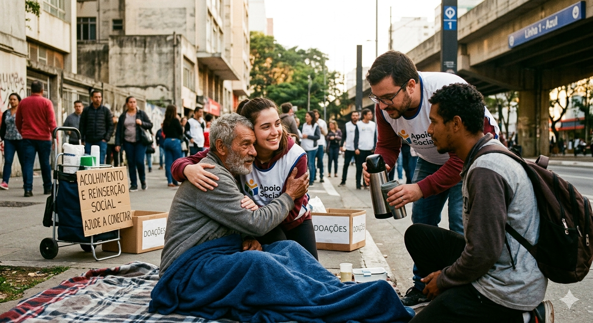

Por trás de cada história nas ruas, há vidas que precisam de apoio. Apoie projetos voltados ao acolhimento e à reinserção social de pessoas em situação de rua. Reporte situações e conecte-se com quem está na linha de frente.

Famílias enfrentam dias sem comida ou refeições adequadas.
Pessoas em situação de rua não têm acesso a atendimento médico básico.
Sem apoio, é quase impossível sair da situação de rua sozinho.
A baixa escolaridade é um obstáculo para a reinserção social.